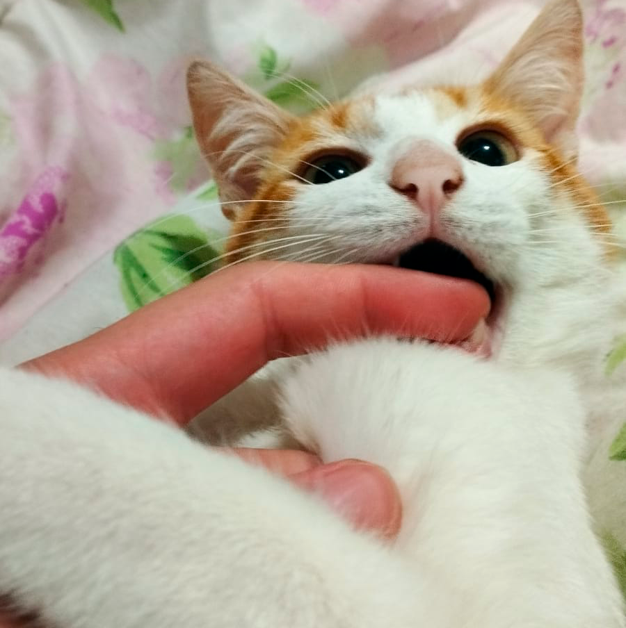
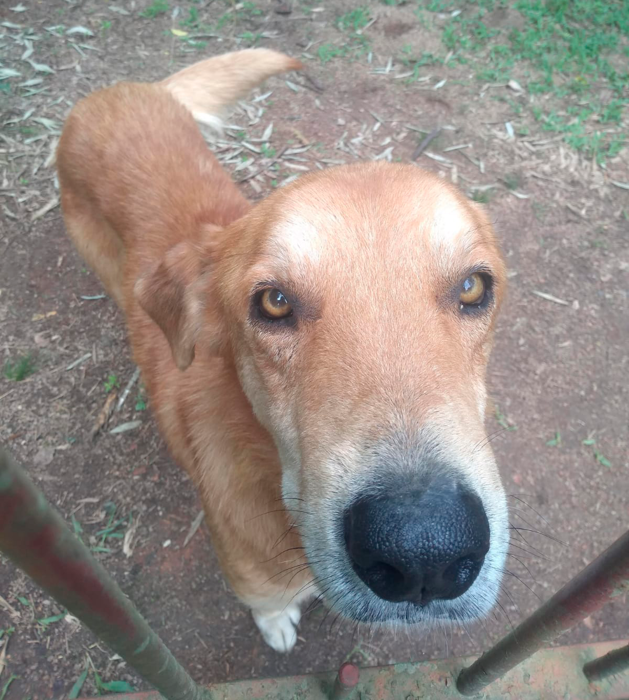
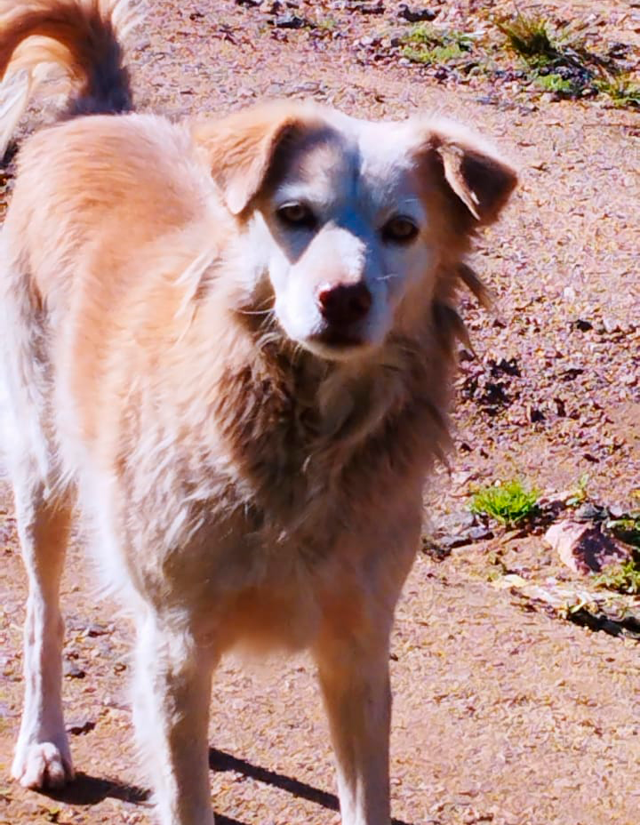
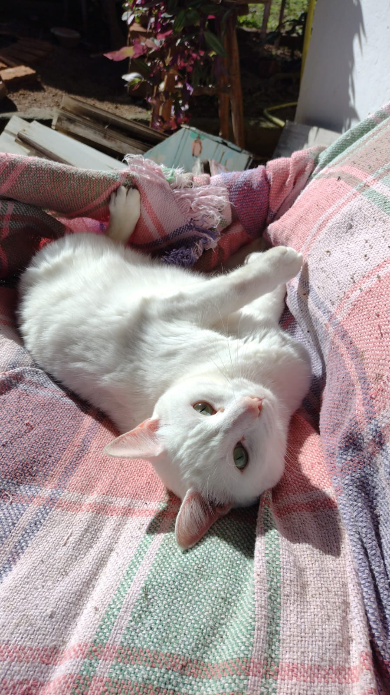

Quem somos
Patinhas Quentinhas é um grupo formado pelo alunos de Ciência da Computação na FADERGS, com o objetivo de conscientizar pessoas sobre o abandono dos animais, principalmente na comunidade do Belém Velho em Porto Alegre, no último ano, foi abandonado mais de 25 pets (cães e gatos) na Estrada Ântonio Borges. Este local é uma rua mais afastada no bairro, onde os criminosos praticam esse ato ilegal que é o abandono.
Alguns dos pets abandonados
A comunidade do Condominio Monte Verde, que reside no local dos abandonos, adotaram ou conseguiram uma familia para os animaizinhos deixados na rua. A dona do Condominio chamada de Adriana adotou mais de 12 pets abandonados no local, além dos moradores do Condominio, que contabiliza 7 adoções e ajuda aos bichinhos.
Alguns dos Pets:
- 
- 
- 
- 
Não abandone seu pet
O abandono é a consequência da irresponsabilidade daqueles que pensam muito vagamente, ou nem pensam neste assunto e resolvem o problema de uma forma cruel para o animal. O animal de estimação é um companheiro para a vida e deve ser tratado como um membro de sua familia.
Adotar um filhote sem nenhuma preparação para lidar com a alta energia dele é uma grande irresponsabilidade.
Na fila da adoção, os filhotes são os preferidos da grande maioria. Contudo, o abandono de cães com muita energia é bastante comum. Esse cenário é um resultado da falta de preparação dos tutores após a chegada do animal em casa. Essa é uma fase de muito aprendizado para o bichinho. Ele precisa da atenção e suporte do tutor para aprender o que é certo ou errado, o que pode ou não fazer. Sem nenhuma instrução, o filhote não tem como adivinhar que não pode destruir aquele objeto, não fazer xixi em determinado lugar ou morder a mão de alguém. Aliás, esse é um comportamento muito comum. Na fase em que os dentes estão nascendo, eles começam a mastigar e morder tudo o que veem pela frente. Além disso, os pequenos têm muita energia para gastar, são ativos. Assim, precisam brincar, correr e interagir através de novos desafios.
Formas para mudar a situação:
- Criar uma rotina para o cão com horários;
- Proporcionar uma socialização entre ele e outros animais e pessoas, após todas as vacinas estarem em dia;
- Passear diariamente após a última dose vacinal;
- Ter momentos de brincadeiras e interações entre o filhote e a família.
Contudo, quem ainda não adotou um cão, é necessário pensar bem se é possível proporcionar tudo isso a ele. Os cães são muito fofos, trazem amor e alegria para o lar, mas também dão muito trabalho e gastos. Por fim, levar um filhote para casa não é como um test drive, se ele aprontar, manda embora. É preciso investir tempo e ter paciência até ele aprender o que o tutor deseja dele. Os cães são muito inteligentes, só precisam que os seres humanos tenham mais calma e conscientização para educá-los.
Saiba como denunciar maus-tratos ou crueldade contra animais
Caso você presencie maus-tratos a animais de quaisquer espécies, sejam domésticos, domesticados, silvestres ou exóticos – como abandono, envenenamento, presos constantemente em correntes ou cordas muito curtas, manutenção em lugar anti-higiênico, mutilação, presos em espaço incompatível ao porte do animal ou em local sem iluminação e ventilação, utilização em shows que possam lhes causar lesão, pânico ou estresse, agressão física, exposição a esforço excessivo e animais debilitados (tração), rinhas, etc. –, vá à delegacia de polícia mais próxima para lavrar o Boletim de Ocorrência (BO), ou compareça à Promotoria de Justiça do Meio Ambiente. A denúncia de maus-tratos é legitimada pelo Art. 32, da Lei Federal nº. 9.605, de 12.02.1998 (Lei de Crimes Ambientais) e pela Constituição Federal Brasileira, de 05 de outubro de 1988. É possível denunciar também ao órgão público competente de seu município, para o setor que responde aos trabalhos de vigilância sanitária, zoonoses ou meio ambiente. Lembrando que cada município tem legislação diferente, portanto caso esta não contemple o tema maus tratos pode utilizar a Lei Estadual ou ainda recorrer a Lei Federal.